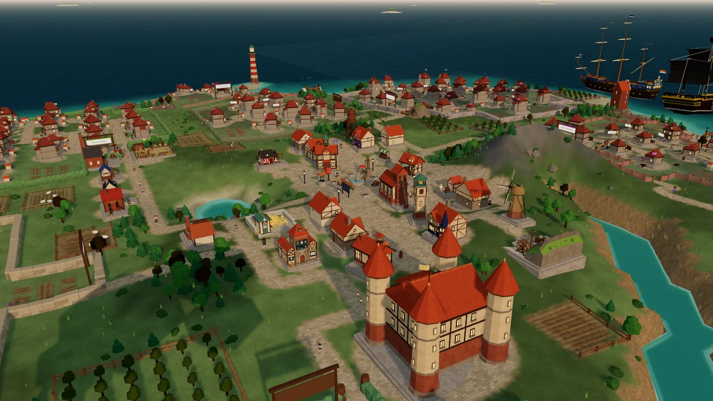
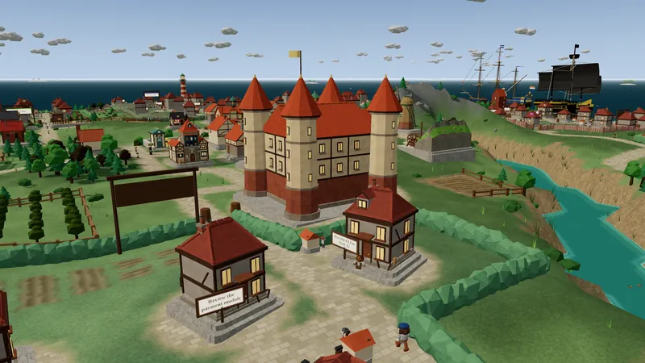
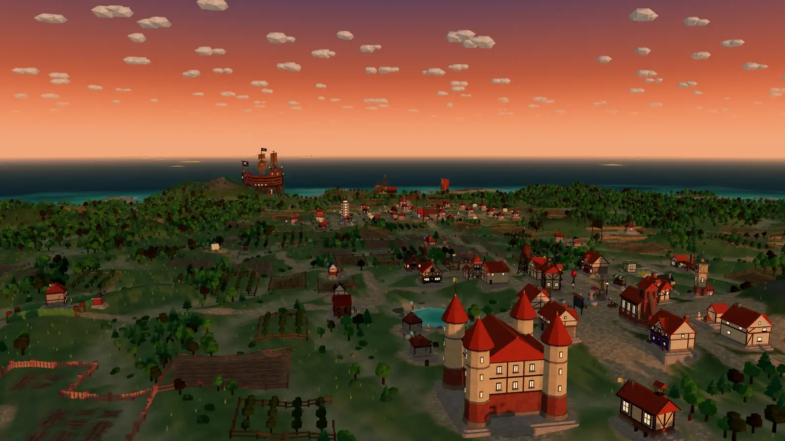
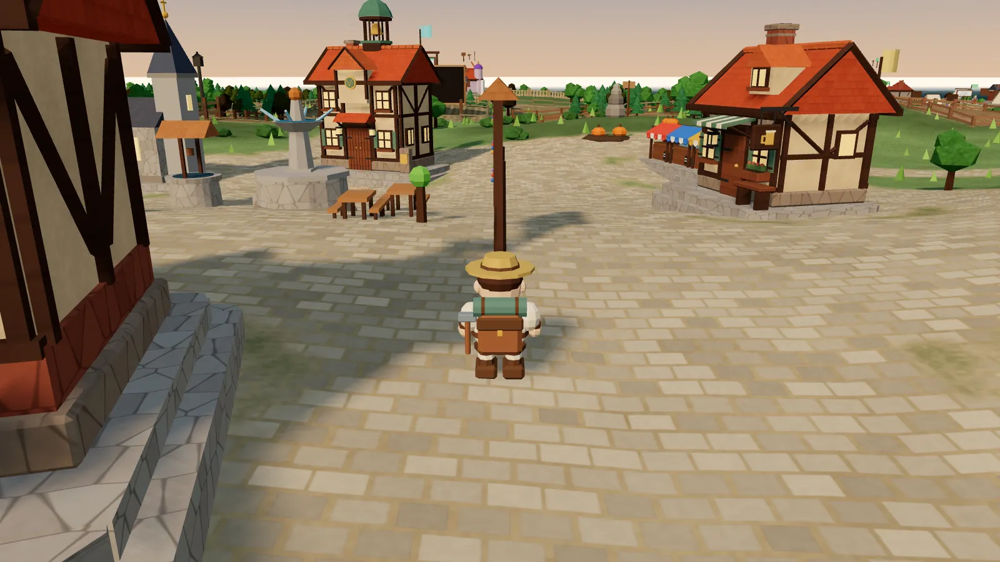
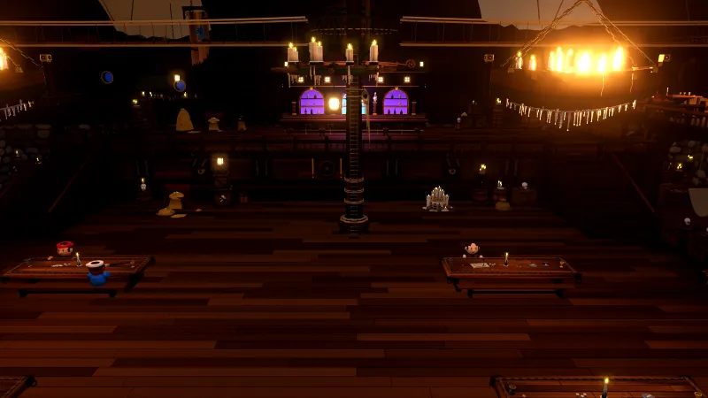
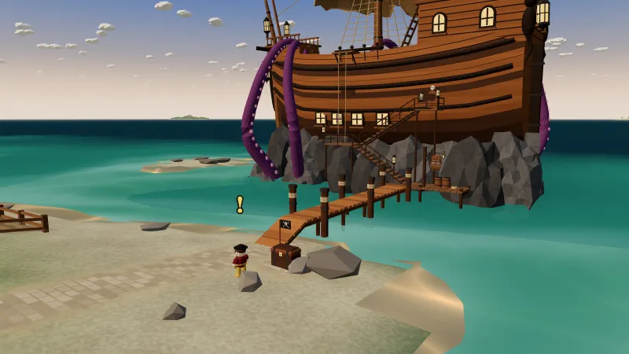
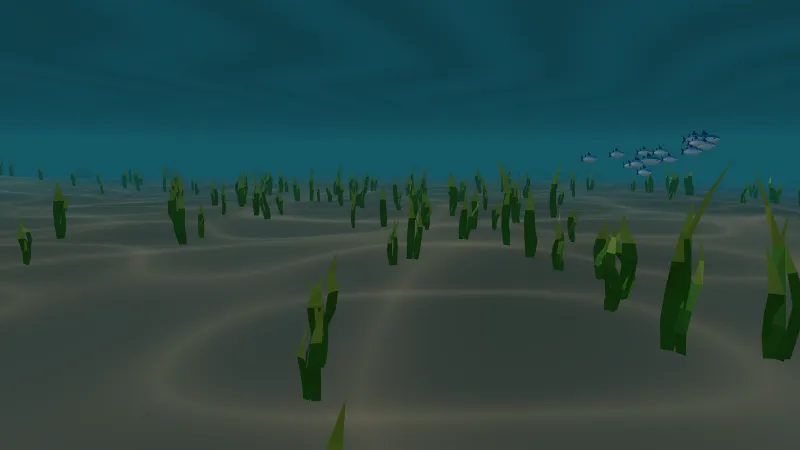
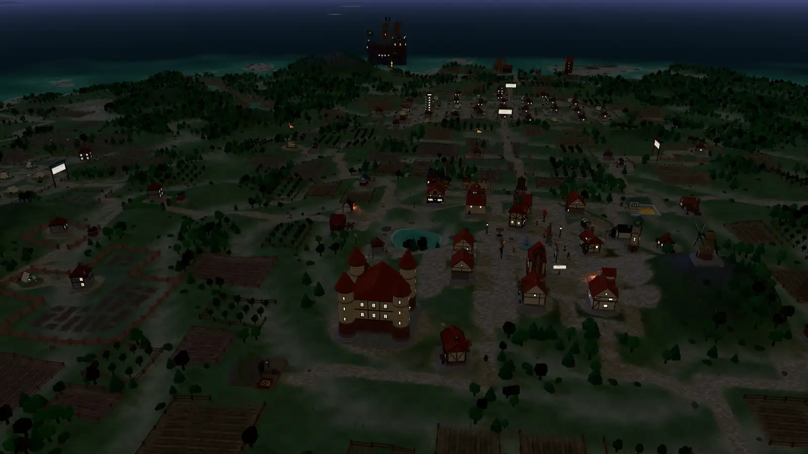
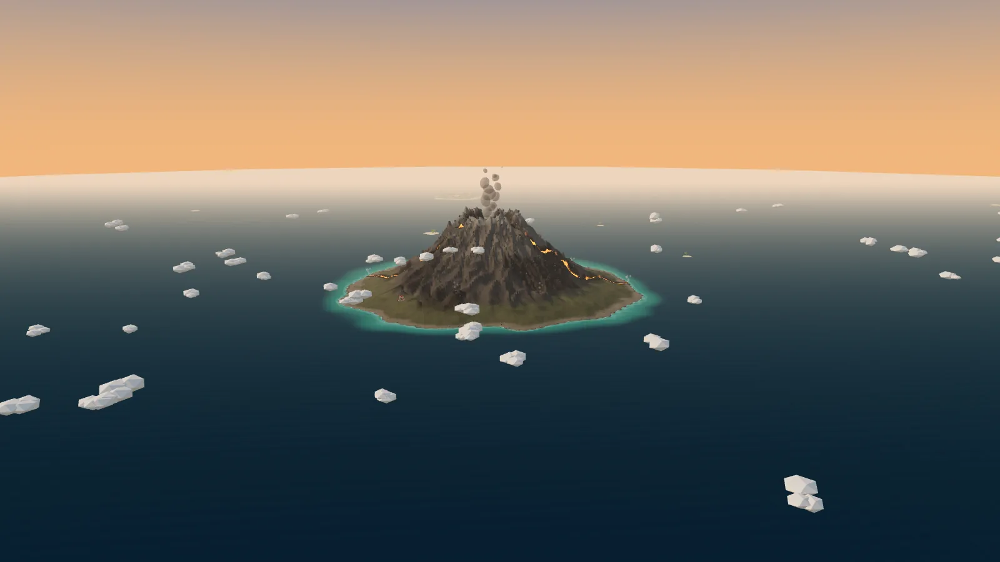
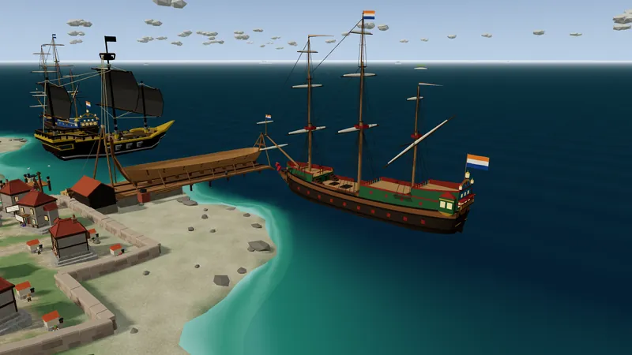

The planner
Look down on the island like a chart. Move whole hamlets with their houses and land, draw roads, give the town room and drain a polder from the sea.
A living island for Claude Code
Promptholm turns the Claude sessions on your computer into a living 3D island. A settler arrives for every session, their house grows as the work does, and a whole town rises around the square. Taverns, a castle, a harbour full of tall ships, and a pirate pub on a rock out in the bay.
v0.10.4 · 30 MB ·Free. No account, no API key, no telemetry.

Reads what is already there. The island is built from the session records Claude Code keeps on your disk.
Your work stays yours. No API keys, no telemetry, no account. Visitors only ever see a redacted town.
Live while you work. A new session walks ashore within a minute. A running one has scaffolding up.
A house never moves. Your town is yours. It keeps its streets, update after update.
How it works
Nothing on the island is invented. Every building stands for something real in your work with Claude, and the island redraws itself as that work changes. Read it like a map.

The town
Every few settlers the village earns a building of its own. The well comes at five, the bakery at twelve, the tavern opens at fifteen, and shops fill the streets around the square. Once the lighthouse burns the pirates find the harbour. At ninety the village bridges the river, at a hundred the castle goes up, and past that the town turns to the sea: a shipyard, a Dutch East Indiaman at anchor, a crane on the quay.
When the land runs out, the island grows. New coast rises from the shallows, old coves are drained into polders, and the river mouth becomes a harbour with a stone quay.

Settlers on your island, and what the town builds for them
On foot
Come down from the sky and walk the island yourself, with keyboard and mouse or a controller. Walk up to any house and press E: that session opens as a conversation, with what you asked, what Claude answered and every tool it reached for.
Type, and you carry on in that same session. Its house grows while you talk.
Pick who you walk as: the Traveller, the Adventurer, or a Wanderer, man or woman, dressed piece by piece from your inventory.

Adventure
Between the work there is a story to play. It starts with a pirate on the beach and goes on in a pub at sea, on maps in bottles and down on the sea floor. Your quest book keeps track, and every chapter pays out in something to wear.

At fifty-two settlers the pirates find your harbour and put a galleon on a rock in the bay. Cross the gangway and climb in: a hall built from shipwrecks, a hearth, a jukebox playing shanties and a crew at the tables, each with a chapter of the story to tell.

The pirate by his sea chest hands you a shovel and a map. Sail to the islet, find the X, dig, and carry what you find home to your town square. After that the sea washes up a bottle with a new map on every day the village has worked.

Swim out and dive. The sea has a floor of its own, with kelp forests, coral banks, shells and shoals of fish that part around you. Keep an eye on your breath: half a minute down there, then it is back to the surface.
Day and night
The island keeps real time. Windows glow after dark and the lighthouse sweeps the bay. At ten the whole village walks to the square for coffee. Lunch is at half past twelve, tea at three, and on Friday afternoon everybody stays for drinks. The church bell strikes the hours, the smith's hammer rings across the street and a jazz trio plays in the tavern.

Together
Join a sea with friends or colleagues and every island in it floats in the same water. Sail across, walk their streets and watch their settlers at work. In the middle of the world smokes the volcano, with lava in its ravines, plank bridges across its flows and guards who do not like visitors.


A visiting island is redacted before it leaves yours. Others see the town, the settlers and the ships. Your prompts, file paths, tickets and code stay on your machine.
The sea keeps the clock and the weather, so rain, fog and the evening light fall on every island in it at once.
The tavern, the Salty Kraken and the castle are shared rooms: walk in through any island's door and you drink with everybody else who did.
Around the volcano lie small starter islands with a square, a tavern and a town hall. Arrive without an island and you start on one of them, with a skiff waiting just off the beach.
The keeper's tools
You are the island's keeper. The town lays itself out, but it listens when you want a say.
Look down on the island like a chart. Move whole hamlets with their houses and land, draw roads, give the town room and drain a polder from the sea.
Your Jira sprint on a cork board and your GitHub issues under a copper roof, pinned on the square. Hand a card to a settler and a new Claude session sets off to do it.
Every repository's hamlet has one. The branch, what is waiting in the working tree, the recent history and every diff, without leaving the island.
Your five-hour usage window, counted in bars of gold. A miner digs the week's ore and a goldsmith keeps the pit stocked.
Gallery
Every picture here is a screenshot of Promptholm running, most with the interface hidden for the view. Click one to see it large.
The whole island, 140 houses in seventeen hamlets with room to grow.
The square, where the village meets for coffee.
The galleon and the Batavia.
The lighthouse on the northern point.
The square after dark.
A hamlet by the north shore, fields all round it.
The north coast, with the shipyard at work.
An island earlier on, before its hamlets filled in.
With the interface on: hamlet names, counts and a timeline to replay how the town grew.
The Salty Kraken, aground in the bay.
Inside, where the crew drink.
Down on the sea floor.
Nothing is invented. Your work never leaves the computer.
Read only, from your own disk. Promptholm reads the transcripts Claude Code already writes. It needs no API key and sends no telemetry.
Visitors look, never touch. Whoever visits sees a redacted town. Everything that can change something answers only to your own computer.
Never in your way. The session hook writes nothing into your sessions and always steps aside. Claude never notices the island is there.
Download v0.10.4
Promptholm is free. Your island starts empty the day you found it, and the first settler walks ashore with your next Claude session.
promptholm.exe. If SmartScreen asks, choose More info, then Run anyway.Needs Windows 10 or 11, Node.js 22 or newer and Claude Code. The island tells you when a new release is out and installs it with one click. Your island lives in %USERPROFILE%\.promptholm, or on any drive you move it to, and stays where it is.
No island of your own on a phone. Instead you start on a starter island on the shared sea, take your skiff and sail out to visit everybody else's, with touch controls made for it. Most new versions reach the app without a new APK.
Download the APKgit clone https://github.com/TiemenAfman/AgentVillage.git
cd AgentVillage
npm install
npm run setup
npm run devFAQ
Watching costs nothing: the island is drawn from transcripts that are already on your disk. Talking to a settler or handing out a ticket runs a real Claude session, exactly as it would from a terminal.
Claude Code sessions from the terminal, VS Code or the desktop app, starting from the day you found your island. A session hook tells the island the moment one starts, and it rescans every minute besides. Cowork tasks that ran on this machine come ashore by boat at the quay.
No. The island runs on your own computer. Anyone who visits, on your network or on a shared sea, sees a redacted copy of the town: buildings and settlers under anonymous names, never a prompt, a path or a line of code.
The desktop version is made for Windows today. On Android you can join the shared sea and visit other islands from your phone.
Nothing moves. Your island lives in %USERPROFILE%\.promptholm (or the drive you moved it to), apart from the program, and a house never moves by itself. When a release is out the island says so and installs it for you with one click; unpacking a new zip over the old one works just as well.
Join the same sea from the main menu. Every island in a sea floats in one world: sail over, or watch from the sky while their settlers go about their day. On a phone, friends come along with the Android app.